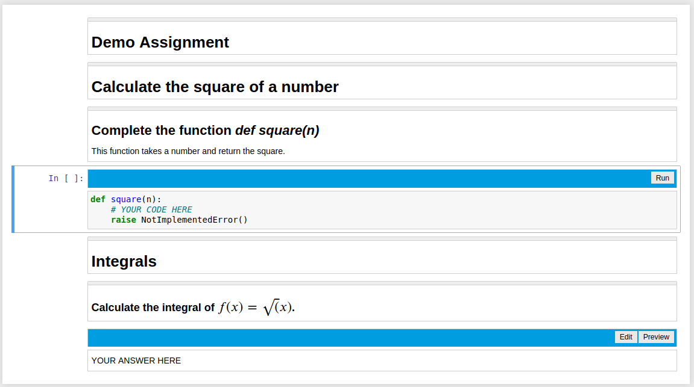
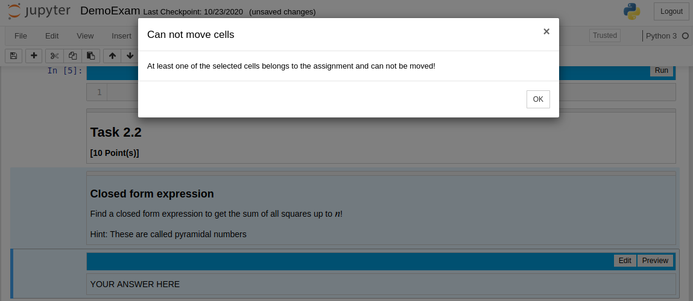

Student Assignment Mode¶
In student assignment mode the nbgrader assignment list extensions are enabled. Additionally two e2xgrader extension are activated.
Assignment View Toolbar¶
The Assignment View toolbar will be activated whenever a student opens a notebook with nbgrader cells in it. The toolbar displays a blue bar above each solution cell to avoid confusion about where a student should write their answer.
For code cells the bar also includes a button to run the cell. For markdown cells the bar allows you to switch between edit mode (unrendered cell) and preview mode (rendered cell).
Assignment Notebook¶
The Assignment Notebook extension does the following:
Disable changing cell types of nbgrader cells
Disable moving nbgrader cells
Hide empty test cells
Disable unrendering of nbgrader read-only cells
Show line numbers by default
When a student tries to change the cell type of a nbgrader cell, a message will appear that informs the student that the cell type can not be changed.

When a student tries to move a cells which contain a nbgrader cell, the student will see a similar message.
Activate Student Assignment Mode¶
To activate student assignment mode execute the following in a terminal:
python -m e2xgrader activate student --sys-prefix